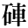
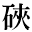

| 1_88_93.gif |
●小酒井不木『毒と迷信』 |
|
| 1_89_1.gif |
●芥川龍之介『秋山図』 |
|
|  | 1_89_5.gif |
●夏目漱石『虞美人草』 ●萩原朔太郎『定本青猫』 |
| 1_89_6.gif |
●菊池寛『俊寛』 ●中島敦『光と風と夢』 ●中島敦『李陵』 |
|
| 1_89_8.gif |
●黒島伝治『武装せる市街』 |
|
| 1_89_11.gif |
●尾崎紅葉『金色夜叉』 |
|
| 1_89_12.gif |
●夏目漱石『虞美人草』 ●萩原朔太郎『定本青猫』 |
|
| 1_89_13.gif |
●夏目漱石『思い出す事など』 |
|
| 1_89_15.gif |
●三遊亭圓朝、鈴木行三校訂『菊模様皿山奇談』 |
|
| 1_89_16.gif |
●桑原隲蔵『東洋人の発明』 |
|
| 1_89_17.gif |
●夏目漱石『草枕』 |
|
| 1_89_18.gif |
●芥川龍之介『あの頃の自分の事』 ●芥川龍之介『木曾義仲論』 ●芥川龍之介『戯作三昧』（新字・旧仮名） ●芥川龍之介『戯作三昧』（新字・新仮名） ●芥川龍之介『素戔嗚尊』 ●芥川龍之介『路上』 ●泉鏡花『義血侠血』 ●島崎藤村『夜明け前 第二部上』 ●徳冨蘆花『謀叛論（草稿）』 ●夏目漱石『永日小品』 ●夏目漱石『趣味の遺伝』 ●森鴎外『津下四郎左衛門』 |
| 2_82_32.gif |
●夏目漱石『薤露行』 |
|
| 2_82_33.gif |
●尾崎紅葉『金色夜叉』 |
|
|  | 2_82_38.gif |
●桑原隲蔵『大師の入唐』 |
| 2_82_48.gif |
●夢野久作『ビルディング・縊死体・月蝕・微笑』 |
| gaiji001.gif |
●夏目漱石『思い出す事など』 |